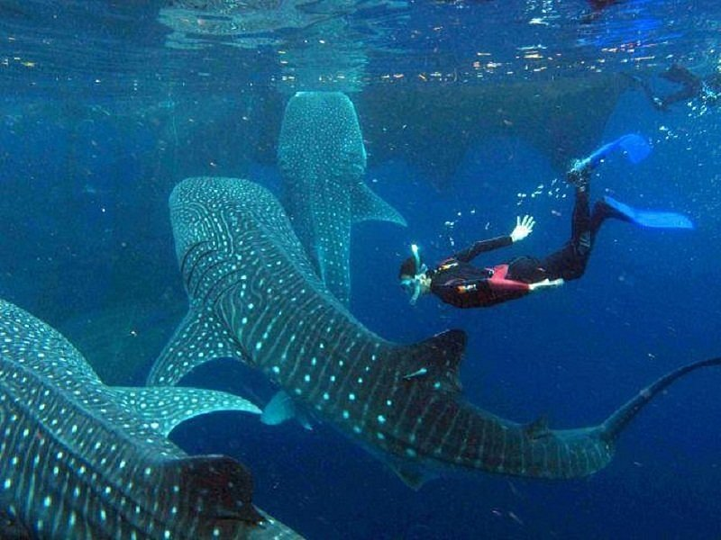
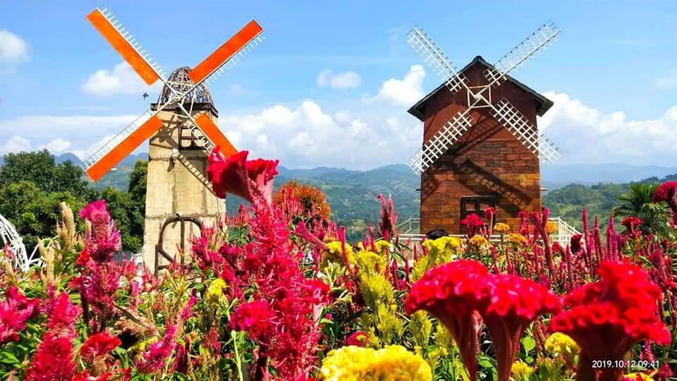

Oslob Whale Sharks

Experience swimming with the gentle whale sharks in Oslob.
More Info
Sirao Flower Garden

Known as the Little Amsterdam of Cebu because of its flowers.
More InfoClick the image or More Info button to learn more.

Experience swimming with the gentle whale sharks in Oslob.
More Info
Known as the Little Amsterdam of Cebu because of its flowers.
More Info